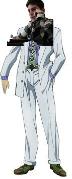

Josuke Higashikata
stand - Crazy Diamond
ability - Crazy Diamond ability is heal other,but not him self
Okuyasu Nijimura
stand - the hend
ability - The Hand's ability is to erase anything from existence, even including the air
Guram Vakhtangashvili
stand - killer queen
ability - expload everything it touch
His name is Guram Vakhtangashvili. He is 16 years old. He lives in the center of Tbilisi, in a quiet residential area surrounded by old villas and tree-lined streets. He is not in a relationship. He’s a student and also works part-time at the Kame Yu department stores. Every day, he gets home by 8 PM at the latest. He doesn’t smoke, but he does drink on rare occasions—nothing excessive.
He goes to bed at 11 PM and always makes sure to get eight hours of sleep, no matter what. Before sleeping, he drinks a glass of warm milk and does about twenty minutes of stretches. Thanks to that, he usually has no trouble sleeping through the night and wakes up in the morning without any fatigue or stress. Like a baby. At his last check-up, he was told he’s perfectly healthy.
He tries to live a quiet life. He avoids getting involved in unnecessary drama or competition—things like winning or losing that might disturb his peace of mind. That’s how he deals with the world around him, and he believes that’s what brings him
However... if he were to fight, he wouldn't lose to anyone.
